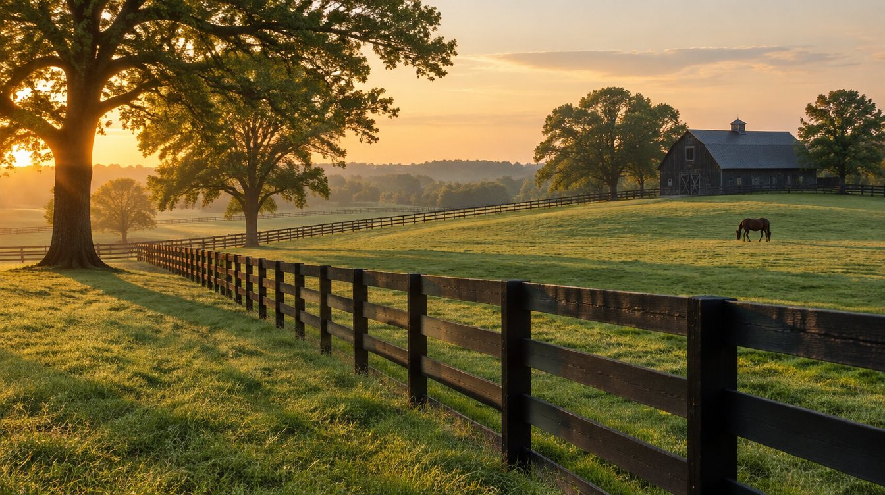

Jessamine County’s newest luxury community, on Harrodsburg Road at the Lexington line. Keystone holds two homesites here, each with an exquisite four-bedroom home designed and ready to be built for you.
A home of quiet grandeur: cream brick beneath steep gables, arched black windows framed in shutters, and an arched entry glowing with lanterns. About 3,500 square feet, four bedrooms and four baths, on high, nearly level ground that backs to the community green and the restored tobacco barn.
Light is the signature here: a two-story wall of glass beside the entry, whitewashed brick, and warm accents of cedar and standing-seam metal. About 3,800 square feet, four bedrooms and four baths, on a homesite whose gentle fall makes room for a look-out lower level.
Both proposed homes follow Cassity Farm’s architectural standards: two-story homes of 2,900 square feet or more, masonry exteriors and garages that face the side, never the street. Homesites are expected to be ready in 2027. Homes shown are artist renderings.
The setting
Where the Bluegrass meets everything Lexington offers.
Cassity Farm sits on Harrodsburg Road, right at the border of Lexington and Nicholasville, beside the historic Keene community. Shopping, dining, Keeneland and the airport are minutes away, and the countryside is just outside your door.

The neighbor next doorHistoric Keene and Keene Trace Golf Club, a private club with two 18-hole courses that has hosted the PGA Tour.
Where Lexington meets Nicholasville
Country quiet on Harrodsburg Road, with all of Lexington minutes away.
The Fountains shopping & diningAbout 2 min
The Summit at Fritz FarmAbout 10 min
KeenelandAbout 10 min
Blue Grass AirportAbout 10 min
University of Kentucky & UK HealthCareAbout 20 min
Baptist Health & CHI Saint JosephAbout 20 min
Typical drive times by car.
Open land
More than 11 acres of planned open space across the community.
The barn
A renovated tobacco barn becomes the residents’ gathering place, with pickleball courts beside it.
Built for basements
Every lot is planned to support a basement, for room to grow below.
Modern services
Public water and sewer, natural gas and fiber internet planned throughout.
Come see it
Walk Cassity Farm with us.
We would love to show you both homesites, share the plans and pricing, and talk through what your home here could be.